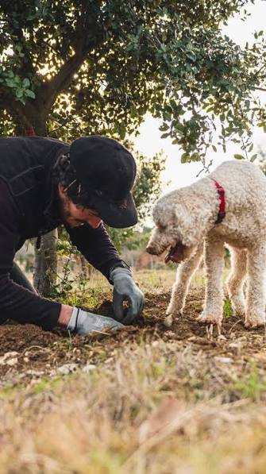

Cavage
à la truffe
avec chiens truffiers


⟹ Savoir-faire Gastronomique ⟸
Sur les causses calcaires du Quercy, la truffe noire, Tuber melanosporum, pousse en symbiose souterraine avec les racines des chênes truffiers depuis des temps immémoriaux. Sa cueillette, appelée « cavage », est attestée dans le Lot depuis le Moyen Âge, mais c'est au XIXᵉ siècle, avec la plantation massive de truffières sur les terres pauvres des causses, que le département devient l'un des grands bassins truffiers de France.

Longtemps confié au cochon truffier, réputé pour son odorat mais difficile à maîtriser une fois la truffe repérée, le cavage s'est progressivement transmis au chien, plus docile et tout aussi sensible au parfum caractéristique du champignon. Chaque famille de caveurs dresse encore aujourd'hui son propre chien, souvent dès le plus jeune âge, dans un savoir-faire transmis de génération en génération.
Le marché de Lalbenque, qui se tient chaque mardi après-midi de la fin novembre à mars, demeure l'un des rendez-vous les plus emblématiques du « diamant noir du Quercy ». Les transactions, encore négociées à la voix et scellées d'une poignée de main, perpétuent des usages commerciaux plusieurs fois centenaires.
Aujourd'hui, le Lot reste l'un des premiers départements trufficulteurs de France, porté par une nouvelle génération de planteurs qui replante des truffières tout en préservant les gestes ancestraux du cavage.
La truffe noire ne se cultive pas à proprement parler : elle se laisse simplement guider vers les racines de jeunes chênes plantés sur des sols calcaires, secs et pauvres, typiques des causses du Quercy blanc et du Quercy gris.
Cette association, appelée mycorhize, unit durablement le champignon et l'arbre : le mycélium colonise les racines et fructifie, en surface, sous la forme d'un « brûlé » où l'herbe peine à pousser, signe reconnaissable des truffières en production.
Le climat contrasté du Lot, étés chauds et secs, hivers frais, associé à des pluies d'orage bien réparties en été, crée des conditions particulièrement favorables à la fructification de Tuber melanosporum, qui fait du département l'un des premiers bassins trufficoles français.
Réchauffement climatique : la multiplication des sécheresses estivales fragilise la fructification et menace la pérennité de certaines truffières historiques.
Fraude et concurrence : l'arrivée de truffes importées, parfois vendues sous une origine trompeuse, fragilise la confiance sur les marchés traditionnels.
Transmission du savoir-faire : le dressage patient d'un chien truffier et la lecture fine du terrain restent des compétences longues à acquérir, transmises de caveur à caveur.
Renouvellement des truffières : une nouvelle génération de trufficulteurs replante et modernise les plants mycorhizés pour assurer la relève des vergers vieillissants.
Assister à une démonstration de cavage ou simplement humer l'ambiance d'un marché aux truffes reste l'une des expériences les plus authentiques du Quercy hivernal.
Le marché au cadran de Lalbenque chaque mardi après-midi de fin novembre à mars, l'un des plus réputés de France pour la vente de la truffe noire.
Le marché de Limogne-en-Quercy autre rendez-vous historique du vendredi matin, plus intimiste, apprécié des connaisseurs.
Les fermes et écomusées truffiers plusieurs exploitations du Lot proposent des démonstrations de cavage avec chien, sur réservation en saison.
Les fêtes de la truffe organisées en hiver dans plusieurs villages du département, mêlant marché, repas et animations autour du « diamant noir ».